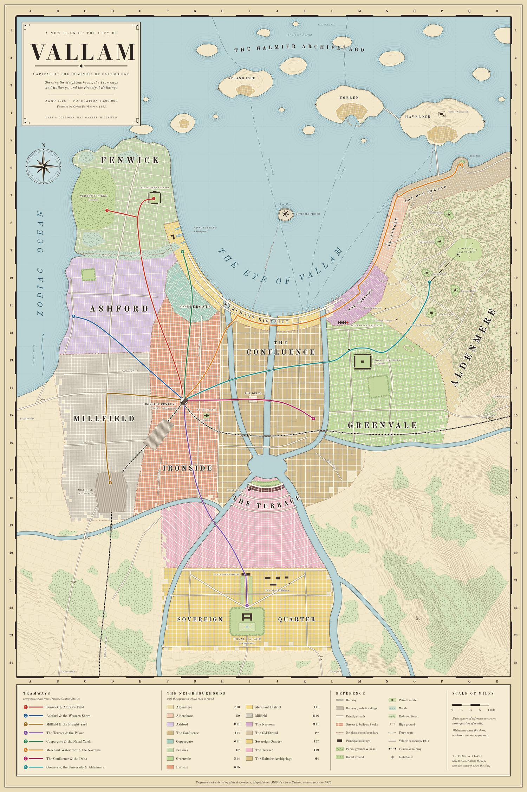
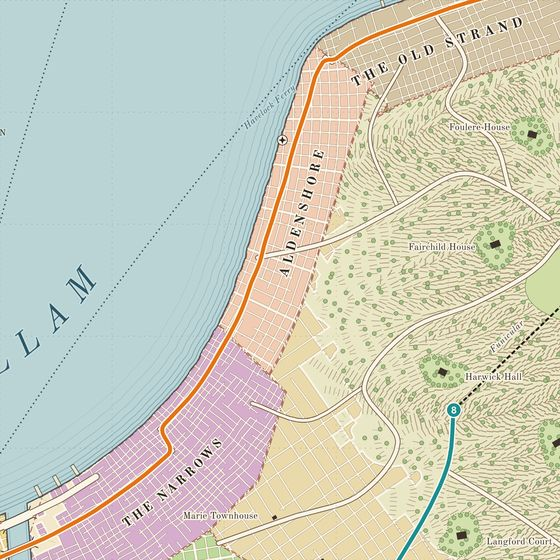
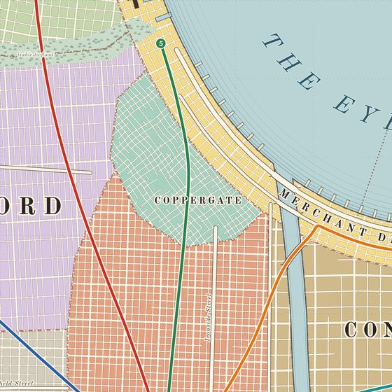
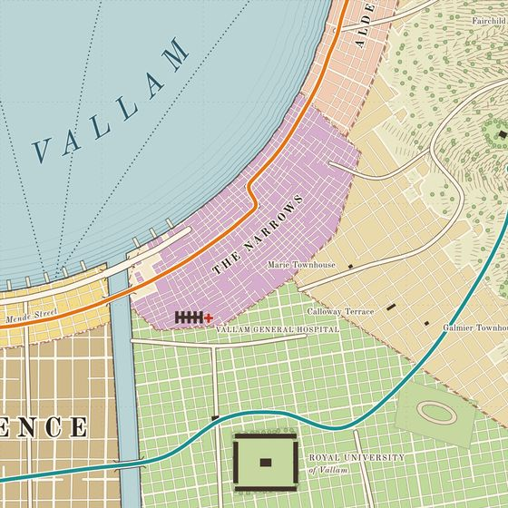
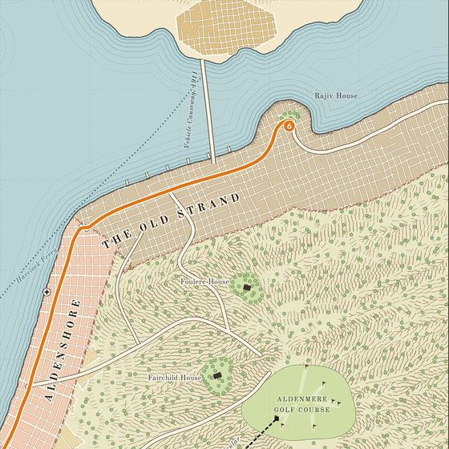
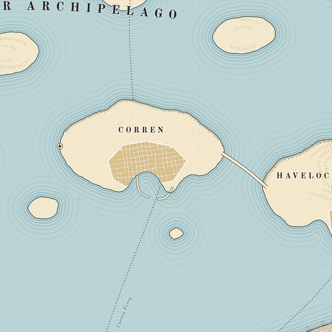
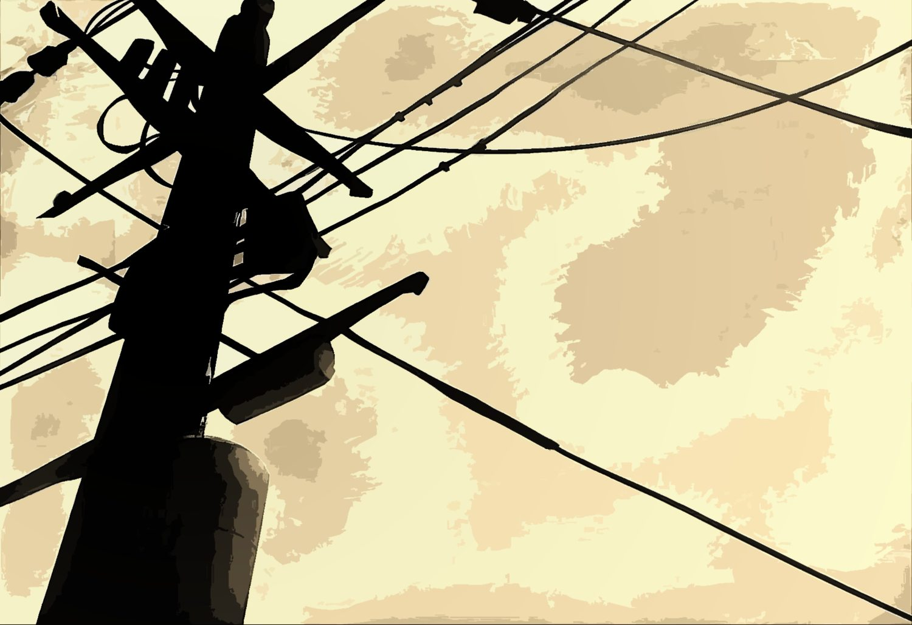

Vallam combines the sophistication of an imperial capital with the restless energy of a city convinced the world is ending and determined to dance through it. As the largest city on Morphe, it is extraordinary, exhausting, and very loud. Founded in 1142 of the Astralist calendar, Vallam began as a trading settlement on the northern coast of the Reach, at the mouth of the river Orion Fairbourne selected for its establishment. After nearly eight centuries of growth, the city reflects its layered history.
Its oldest cobbled streets remain too narrow for modern motor vehicles, following the original settlement's layout, while steel-framed commercial towers and Art Deco administrative complexes commissioned by the current Parliament rise above them. Vallam has never been rebuilt from scratch;
it has only expanded, leaving its architecture a constant source of debate.
By 1926, Vallam has a population of approximately 6.5 million, nearly twice that of its closest competitor. It houses the Royal Palace of Fairbourne, Parliament, the Dominion Ministry complex, Fairbourne Naval Command headquarters, the country's two largest universities, its largest hospital, its most prominent courts, its busiest port, and most of its major newspapers. Beyond its official institutions, Vallam also boasts the Dominion's most established criminal underworld, the northern hemisphere's most active speakeasy scene, and a substantial foreign population representing nearly every nation Fairbourne has traded with or annexed. Its police force struggles to maintain order amid the competing interests, illicit industries, and sheer scale of the city.
The Vallammer
The term Vallammer refers to a native or long-term resident of Vallam, distinguishing them from visitors and recent arrivals. By 1926, the city's mix of grandeur, squalor, and constant activity has shaped a recognizable local character.
The first is a general indifference to the remarkable. Vallam produces so many remarkable events that its residents develop a high threshold for surprise. Even genuinely unprecedented occurrences may earn little more than a casual remark. Vallammers have learned that fixating on one spectacle means missing the next. Visitors often mistake this composure for coldness. The second is a strong and largely unsentimental civic pride. Vallammers take genuine pride in their city without overlooking its flaws.
Vallam is filthy in some districts, beautiful in others, violent in particular ways, generous in others, and perpetually under construction. It encompasses humanity at its most sublime and shameless, and its residents resist attempts to simplify that complexity. They criticize their city freely but are quick to take offence when outsiders do the same, regarding such criticism as an unearned privilege.
The third is a relationship with class that is more permeable than most of the world but less permeable than Vallam likes to believe about itself. Vallam's founding mythology emphasizes merit and earned status, supported by social mobility that remains remarkable by global standards. Yet its egalitarian self-image exceeds reality. Aldenmere Heights still house many of the same families they have for a century, while children raised in Ironside's tenements tend to remain there. Those who cross these boundaries are celebrated precisely because they are exceptions. Vallam is sincerely idealistic in its public attitudes, structurally conservative in practice, and adept at reconciling the two through stories of exceptional individuals and social advancement.
The War and The City
The Great War isn’t in Vallam in any observable, dramatic sense. The front is thousands of miles away on the other continent. The bombing raids that some of the smaller Corda cities have endured have not reached Vallam. The Fairbourne Naval Command has ensured that. What is in Vallam is quieter.
The veterans are the most visible sign. They return through the docks in batches no longer with parades. The parades stopped in about 1910 when it became clear the war was not going to be brief, and scatter into the city's neighborhoods, distinguishable in the first weeks by a particular way of moving through crowds that has nothing to do with confidence and everything to do with the habit of treating open spaces as threats. Most of them find their way back to ordinary life eventually. Some of them do not, and the city has developed an informal infrastructure of people who know how to recognise the ones who are not finding their way back and direct them toward help that may or may not actually help.
The recruiting offices are still open. The ships still leave. The men and women who board them pass, on the dock, the men and women coming off them, and both groups have learned never to look too hard at the other. The gap between what is on the faces of the returning and what is on the faces of the departing is one of the defining images of Vallam in 1926, and enough people have seen it enough times that the newspapers have stopped printing it and the artists have started.
Prohibition
National Prohibition took effect in Fairbourne in 1918, driven by wartime economic priorities.
Supporters argued that breweries could be converted into factories, grain redirected toward ammunition production, and reduced alcohol consumption would make the population more productive. The policy was introduced in good faith, but its consequences were poorly anticipated.
Prohibition has done little to reduce alcohol consumption in Vallam. Instead, it has shifted profits from licensed breweries and public houses to a loose, often violent network of bootleggers, importers, illicit distillers, and speakeasy owners. Hundreds of speakeasies operate across the city at any given time, ranging from sophisticated clubs with live jazz and proper ice to basement establishments serving unidentifiable liquor in filthy cups.
The police know of most speakeasies, but enforcement varies by precinct, officer, and the prevailing balance of informal financial arrangements. Some officers enforce Prohibition rigorously out of genuine conviction; others selectively target rival criminal organisations, while some ignore violations entirely. All three groups share a common resentment of the Prohibition Division, a national enforcement agency operating semi-independently of the city police. By 1926, speakeasies had become central to Vallam's social, cultural, and criminal life. They bring together people who might rarely otherwise interact: wealthy and working-class residents, immigrants and native-born citizens, criminals and legitimate businesspeople, veterans and civilians. Their patrons share tables, liquor, and music across traditional social boundaries. Whether speakeasies represent genuine social democratisation or simply the usual function of bars operating underground depends on the establishment.
Immigration and The Cities’ People
Vallam's port has received immigrants for five centuries, creating a population too diverse for any simple cultural or ethnic classification. Families who have lived in Vallam for three or four generations often claim a degree of seniority over newer arrivals, though each generation finds itself displaced by the next. Ethnic neighborhoods have formed throughout the city, where communities establish their own institutions and preserve traditions adapted to Vallam's conditions. These districts remain fluid, with boundaries shifting over time. Their children grow up speaking Vallammer English with accents their grandparents barely recognize, often experiencing both belonging and alienation in their ancestral and adopted cultures.
The war has introduced another significant group to Vallam's immigrant population: refugees. Since 1918, increasing numbers have arrived through the city's port from Corda's occupied territories, nations conquered by the Lys Monarchy, and regions along the Deadlock's edge that have become unsafe. The Dominion's immigration office processes them in the Merchant District before assigning them whatever temporary accommodation is available. From there, they must find their place in Vallam's social fabric, with varying levels of support and acceptance. The refugee population keeps the war's consequences visible in everyday life. Vallam's response reflects its broader tendency to treat distant crises as someone else's problem until their consequences arrive at the city's doorstep.
The Neighbourhoods

Jump to a neighbourhood
The Confluence
Five rivers converge along the southern arc of the bay, forming the delta that Orion's earliest maps labeled the confluence. The name became that of the Confluence, Vallam's industrial heart and the district that transformed the settlement into the Dominion's economic engine. The district's skyline is dominated by factory stacks, cranes, and market halls. Its air carries the smells of iron, coal smoke, and river water, alongside an unidentified chemical odor that University of Vallam chemists have studied for decades without agreeing on its composition. Because the rivers flood unpredictably, waterfront streets sit on embankments and raised platforms, while nearby buildings elevate their ground floors or use them for flood-tolerant storage, light industry, and commerce.
By day, factories and riverside markets process enormous volumes of goods. These markets operate six days a week, attracting buyers and sellers from across Vallam. The northwestern fish market opens at three in the morning and runs until its stock sells out, bringing together Archipelago fishermen, Terrace hotel suppliers, Ashford households, and chefs from the Merchant District. After dark, changing factory shifts send workers into streets already occupied by the district's nightlife.
Long-established jazz clubs, crowded dance halls, and speakeasies offer cheaper, less polished entertainment than the city's wealthier districts. The Prohibition Division repeatedly raids these establishments, but most reopen within a week, sometimes in new locations and sometimes in the same basements under new furnishings.
The Confluence also houses the Delta, Vallam's largest open-air market, on a broad cobbled square between three central river bridges. On weekends, it grows to three times its weekday size, selling everything from produce and livestock to used clothing and goods of uncertain provenance. City council efforts to regulate, modernize, or relocate the market have repeatedly failed. Operating on the same site for four centuries, the Delta remains a fixture of the district despite persistent administrative opposition.
The Merchant District
North of the Confluence, the Merchant District follows the inner coast of the Eye from the river mouth to the eastern crescent. It is Vallam's working downtown, where most residents outside the tourist, bureaucratic, and wealthy classes conduct their daily business. Narrow in places, only three or four blocks deep between the waterfront and rising land, it stretches along the coast with a density of commerce unmatched elsewhere in the Dominion.
The waterfront is a continuous network of unloading docks, warehouses, chandleries, rope yards, cold storage facilities, and shipping offices. Its largest vessels include cargo ships carrying goods from Corda, Cerani, and the Cradle through the Zodiac Ocean; military supply ships serving naval logistics; and emigration vessels bringing increasing numbers of people from Corda's territories since 1918. At the district's northern end, the Immigration Processing Office handles these arrivals in a long, functional building whose waiting rooms are rarely empty. Its staff rely on standardized procedures to manage a workload that leaves little room for individual attention.
Inland, streets rise gradually from the waterfront and fill with shops, restaurants, pawn brokers, currency exchanges, travel agents, and market stalls serving the city's working population. Businesses cater directly to local budgets and practical needs rather than prestige. Mende Street, three blocks from the docks, is particularly known for its restaurants, ranging from modest white-tablecloth establishments at its eastern end to informal noodle counters in the west.
At the western end of the immigration infrastructure lies Coppergate, Vallam's primary immigrant district. Rather than a unified community, it consists of numerous neighboring groups whose identities emerge through language, cuisine, music, and hand-painted signage. Its residents tend to be newer arrivals, more multilingual, and more conscious of the uncertainty involved in building a life in Vallam. The district is known for its lively streets, complicated local politics, and widely praised food, often considered the best in the city.
At the Merchant District's eastern end, near the Confluence junction, begins the Narrows, officially known as Southgate. Its informal name comes from a compressed street grid that remained unchanged during successive city expansions because property owners repeatedly resisted municipal widening orders. The Narrows is Vallam's oldest entertainment and vice district, predating both the Confluence's clubs and the Terrace's hotels by centuries. It has survived repeated raids, regulations, condemnations, and periods of neglect because its businesses continue to serve demand regardless of their legal status.
By 1926, the Narrows is a major center of Vallam's Prohibition-era underground economy. Its speakeasies are among the oldest and best-stocked in the city, while back rooms host technically illegal gambling operations that the local precinct largely tolerates. Its clubs have hired jazz musicians from Coppergate and the Confluence for fifteen years, making the district a major live-music destination.
Venues range from established clubs with stages and balconies to improvised back rooms with little more than a piano and cleared floor space. With its mix of coal smoke, food, and river air, the Narrows remains active well into the early morning, with establishments still operating and streets busy at three o'clock.
The Terrace and the Sovereign Quarter
South of the Confluence, the city changes the register. The industrial infrastructure gives way to something more deliberate, a district designed in the last fifty years on the clear intention of creating a face for Vallam that matches its status as the capital of the world's most powerful nation, and largely succeeding.
The Terrace is Vallam's hotel and entertainment strip, running along the bay's southern inner coastline in a curve of illuminated high rises that on a clear night are visible from the archipelago. Its hotels are the grandest in the Dominion, ranging from the historic Grand Peeress Hotel, open since 1843, recently refurbished, operating with a discretion about its guests that has made it the first choice of foreign dignitaries and people whose business in Vallam benefits from the assumption they are foreign dignitaries, to the newer towers of the commercial hotel chains that have risen in the last twenty years to accommodate the city's expanding visitor population. The Terrace also contains Vallam's licensed casino district, known as the Hall of Chances colloquially, is a cluster of establishments whose official legal status under Fairbourne gaming law is complex and the subject of annual parliamentary discussion, and which continues to operate with the confidence of something that has been argued about long enough that the arguing has become its own form of endorsement.
The Terrace is where Vallam's theatre district sits, its largest venues hosting productions that run for months and attract audiences from across the Reach. The Vallam Royal Theatre is the nation's flagship dramatic institution, funded partly by public subsidy and partly by a membership scheme whose waiting list is fifteen years long, sits at the Terrace's northern end. The theatres become progressively less prestigious and progressively more interesting as you move south, ending at the Terrace's southern tip with the Vanguard, a small venue that has been producing politically engaged and formally experimental work for thirty years, has been shut down by the authorities four times, and reopened each time to somewhat larger audiences.
The Terrace gives way, at the crescent's lowest point, to the Sovereign Quarter: the city's governmental district, where the scale of the architecture changes from grand to deliberate and the streets are wider and cleaner than anywhere else in Vallam because they are maintained to a different standard.
Parliament House occupies the northern edge of the Quarter. A building of appropriate size and rather less appropriate pomposity, its debating chamber audible from the street on a day when something controversial is being voted on. The Dominion Ministry complex clusters to the east of Parliament, its various departments occupying buildings that range from the properly monumental to the converted Georgian townhouse that the Foreign Office has somehow made work for sixty years.
At the southern center of the Sovereign Quarter, on the slight rise of ground where Orion Fairbourne's original fort stood in the year 1143, stands the Royal Palace of Fairbourne. It is not, architecturally, the most spectacular palace on Morphe as it lacks the baroque excess of Cerani's imperial residences, or the ancient grandeur of Solenne's temple complexes. What it has is seven centuries of continuous habitation, which gives it the specific quality of a building that has been genuinely lived in by people who mattered, and the collection of changes, additions, and unresolved contradictions in its architecture that comes from that length of occupation. The palace's public face are its formal rooms, its gallery of the Fairbourne monarchs, the ceremonial hall used for State occasions, and are open to visitors on specific days and is one of the city's principal tourist destinations. The working palace behind it, where King Gabriel and the family of The Crown actually reside, is not open to visitors and is managed by a staff whose primary qualification is discretion.
Greenvale
East of the Confluence and slightly elevated above it, the ground rises toward the beginning of the crescent's mountain slope, and in that rise the character of the streets changes from industrial to something greener. Greenvale is the name the neighborhood acquired gradually, following the establishment of its central park and the planting campaigns that the University undertook in the 1880s to create a visual counterpoint to the factory skyline of the Confluence below.
The University of Vallam, formally The Royal University of Vallam, informally and always the University or simply Vallam U, is the Dominion's oldest and most prestigious institution of higher learning, founded in 1531 in a building that still stands and is now used as the administrative centre. Its campus has expanded in every direction since then, absorbing adjacent blocks and streets into a loose federation of quads, libraries, lecture halls, laboratories, and the accumulated infrastructure of five centuries of academic activity. The University has faculties in law, medicine, science, arts, philosophy, engineering, and what it calls esoteric studies, the last of which operates from a building in the northwestern corner of campus that other faculties affect not to notice.
The University's Exhibit Museum, its collection of natural history, cultural artifacts, and scientific specimens, is open to the public and serves the dual function of being both a genuine world-class institution of learning and one of the city's primary cultural destinations. Its holdings include material from every continent on Morphe, gathered over four centuries of Dominion exploration and, occasionally, appropriation. The question of how much of this material should still be in Vallam rather than in its place of origin is currently being raised with increasing directness by several of those places of origin, and the Museum's director has been having the same conversation with the Foreign Office about it since 1921.
Vallam General Hospital sits on Greenvale's northern edge, adjacent to the medical faculty and connected to it by a walkway that has been used by medical students and junior physicians running between teaching duties and clinical work for eighty years. It is the largest hospital in the Dominion, serving both as the primary care facility for Vallam's population and as the country's leading centre of medical research. Its waiting rooms are always full. Its wards are always staffed. Its morgue, in the basement, is managed by the hospital's forensic pathology department and is the facility that the city police use for examinations relevant to criminal investigation, a relationship that is practically characterised by the forensic pathologists having strong opinions about how evidence should be handled and the police having strong opinions about forensic pathologists.
The student halls of residence occupy a stretch of Greenvale's southeastern streets as a mix of purpose-built university accommodation and converted private houses that the University has bought up over the decades. The neighborhood around them is accordingly student-inflected with cheap restaurants, bookshops, coffee houses with the particular atmosphere of establishments that have been the setting of many arguments about ideas, and the specific economic ecology of a district where the primary population has limited money and significant time. The University's sports grounds occupy the northeastern corner of Greenvale, and the student athletic culture that centres on them is one of the two universities' most visible points of institutional rivalry.
Aldenmere
East of Greenvale, the crescent's slope steepens dramatically as the city climbs into the mountain range that defines the eastern arm of the bay. Aldenmere, a name derived from the old pre-Fairbourne settlement language, meaning something like the high water, a reference to the mountain snowmelt that feeds the streams running down through the district, is where Vallam's wealthy live, and it makes no particular effort to disguise this.
The estates of Aldenmere climb the mountain in roughly ascending order of wealth, with the lower sections of the district occupied by the prosperous upper-middle class, senior civil servants, established professionals, the partners and directors of successful firms, and the upper sections by the families who have been wealthy long enough that the question of how they became so is no longer asked in their presence. The estates are large, their grounds maintained by staff whose services are engaged through agencies that have operated in Aldenmere for generations, their driveways occupied by motorcars that are chosen primarily for what they communicate about the person who parks them.
The Wildwood Club, privately incorporated, membership by introduction only, waiting list running at approximately eleven years (a joke among the residents), is the social institution around which much of Vallam's elite civic life quietly organises itself. Its building, a long, stone structure set into the mountain's lower slope with views over the entire bay, contains dining rooms, private meeting rooms, a billiard hall, a wine cellar of museum quality, and a library whose acquisition policy is effectively a map of what Aldenmere's membership considers intellectually respectable. The Club's membership is predominantly male; a separate institution, the Wildwood Ladies' Association, occupies an adjacent building and maintains a studiously independent relationship with the Club that has been the subject of both progressive advocacy and persistent aristocratic defensiveness for thirty years.
The Aldenmere Golf Course occupies the mountain's more accessible summit plateau, its eighteen holes requiring a funicular railway to reach and offering views that members describe as compensating adequately for the difficulty of the climb. The course is also, incidentally, one of the better sites in the city for a private conversation that cannot be overheard, which is why it is used for that purpose considerably more often than its nominal function would suggest.
The furthest northern point of Aldenmere's slope descends to The Old Strand, which is a stretch of the crescent's northeastern coast where the oldest residential buildings in the city stand, some of them surviving from the first century of Vallam's history, their walls modified enough times that their present appearance is a palimpsest of seven centuries of architectural fashion. The Old Strand's families are Vallam's oldest, their presence in the city predating the Fairbourne dynasty itself in some cases, and they maintain their warehouses and private docks along the waterfront below as working commercial assets that also happen to be extraordinarily useful for conducting business with minimal port authority involvement.
Ironside
West of the Confluence, the ground flattens and the city's housing density increases dramatically.
Ironside is the name for the arc of dense apartment housing that wraps around the western edge of the industrial center, its streets arranged in a grid that was planned in the 1870s to house the workforce the Confluence's factory expansion required and has been housing them, and their children, and their children's children, ever since.
The buildings of Ironside are tall by the standards of residential construction. Six, seven, eight stories in the older blocks, climbing higher with the more recent additions, and the streets between them narrow enough that in winter the lower floors receive direct sunlight for only a few hours daily. The apartments are small, the common areas are worn, and the buildings' maintenance is the subject of ongoing and generally unsuccessful correspondence between their tenants' associations and the property management companies that own them. Ironside is a “not-a-slum” working-class neighborhood with the specific pride and specific grievances of a working-class neighborhood that knows the city would not function without it and is not consistently acknowledged for this, but it is also not comfortable in the ways that comfort requires space and quiet and sufficient heat.
What Ironside does have is a tram, Ironside Central Station. The hub of Vallam's tram network, a large and surprisingly elegant building whose cast-iron concourse roof has been compared by architecture critics to several much more famous structures in other cities, which sits at the neighborhood's heart, its lines radiating outward to connect every major district in the city. The tram is the practical circulatory system of Vallam for the majority of its population who do not own motorcars, and its Central Station the place where the cross-sections of the city encounter each other in transit, the Greenvale student and the Merchant docker and the Aldenmere domestic servant all passing through the same concourse, waiting for their respective lines, occupying the same space briefly and entirely separately.
The trainyards that adjoin Ironside Central extend west along the embankments built above the neighborhood's lower streets, their activity a constant background of mechanical sound and the particular smell of hot iron and coal that Ironside's longer-term residents have stopped noticing. The yards handle primarily commuter and regional passenger traffic; the freight traffic belongs to Millfield.
Ironside is also home to St. Butcher’s, Vallam's largest Lysterist cathedral. A substantial building in the older Astralist architectural style that occupies an entire city block in the neighborhood's center and serves both as the primary place of worship for Ironside's significant Lysterist community and as the de facto community center for the neighborhood. The cathedral's choir school is one of the city's better free musical education institutions, its choir having produced a disproportionate number of the Confluence's jazz musicians, a fact that the canon currently in charge of the choir school has decided views on.
Millfield
West of Ironside, the apartment towers give way to the commercial and financial district that the city's growth in the last century made necessary and that has been expanding westward ever since. Millfield takes its name from the grain mills that occupied this site before the financial district displaced them, a displacement that happened swiftly and without particular ceremony in the 1850s when the economics of Vallam's growth made milling grain significantly less profitable than processing paperwork about the people who bought grain from elsewhere.
In the northern half of Millfield lies the professional offices of solicitors, accountants, insurance agencies, shipping firms, and the various professional services that cluster around the financial institutions they serve. The Vallam Stock Exchange occupies a building on Millfield's central street that is intentionally imposing and whose trading floor noise can be heard from the pavement outside during active hours. The major banks have their Vallam headquarters in Millfield, and the foreign banks that have established Dominion operations occupy the district's northern streets, their walls carrying the architectural signatures of their home countries in ways that make Millfield's streetscape a fun little tour of Morphe's architectural traditions.
The southern half of Millfield gives way to smaller commercial enterprises, then to the first residential streets of the suburb, then to the handful of small factories that occupy the district's southwestern corner. Several of these factories are currently closed, their bricks presenting blank windows to streets that were, a decade ago, busy enough to require traffic management. The closures are attributed variously to wartime supply chain disruption, to the prohibition of certain chemicals used in manufacturing, and to decisions made by holding companies in Aldenmere whose full reasoning is not publicly available. Whatever the reason, the empty factories are there, and the streets around them have adjusted to their absence quietly, with more people who have nowhere particular to go standing in them.
Millfield Freight Yard occupies the southern edge of the district, a working logistics hub that connects Vallam to the interior rail network running south into the Reach's agricultural and mining regions. The freight yard is the opposite of Ironside Central aesthetically, being entirely functional, unglamorous, organised entirely around the movement of goods rather than people, and equally vital to the city's practical functioning and dependent on a workforce whose relationship with their employer is currently being mediated by a union that is affiliated with the national labour movement and whose local leadership attends, as it happens, the same Lysterist congregation as the canon at St.
Butcher's.
Ashford
North of Millfield, the streets widen slightly and the buildings drop from the commercial scale to the residential. Ashford is Vallam's most extensive middle-class suburb, a district of one and two-story terraced houses that stretches across the upper-western section of the crescent in a pattern that the city's planners laid out in the 1890s and that has been filled in, block by block, over the thirty years since, so that the district now presents to visitors the coherent, slightly repetitive aesthetic of a neighborhood designed to contain respectable people efficiently.
Ashford's residents are the city's working middle class: the clerks of Millfield, the teachers of the district's schools, the nurses and administrators of Vallam General, the tram operators of Ironside Central, the better-paid skilled workers of the Confluence and the Yards. They own their houses or rent them at rates that require a degree of financial stability without demanding prosperity, they maintain their small front gardens to a standard that communicates effort without excess, and they participate in the local institutions. The schools, the churches, the civic associations, the neighborhood cooperative, all of them carry the specific energy of people who understand that the institutions work because enough people show up to make them work.
Ashford Comprehensive, the district's main secondary school, is one of the better state schools in the city, its reputation sufficient to make the north-western section of Ashford slightly more sought-after as a residential address for families with children of secondary school age. Its sports facilities are used by the neighborhood's youth associations on weekends, and its hall serves as the venue for the area's civic meetings, which are attended by a higher proportion of the local population than comparable events in any other district of the city, a fact that local councillors attribute to Ashford's civic culture and that cynics attribute to Ashford having fewer alternative ways to spend an evening.
Ashford has several significant concentrations of the immigrant communities who moved outward from Coppergate over the generations. Families who arrived at the Merchant docks one or two or three generations ago and have spent the intervening time becoming, through a combination of proximity and time and shared school runs and shared fences, Ashford residents of long standing. Their temples, meeting houses, and cultural associations are woven into the neighborhood's fabric alongside the Lysterist congregations and the secular civic institutions, and the district's local stores reflect, accordingly, a range of culinary and commercial traditions that makes Ashford's high street considerably more interesting than its architecture might suggest.
Fenwick
The northernmost point of the crescent, separated from Ashford by a shallow depression in the ground that fills with standing water in heavy rain and has never been adequately drained, is Fenwick.
A neighborhood whose character is shaped by three things: the second university, the marsh, and the graveyard.
The ground here is low and damp, the soil heavy, the air in summer carrying the particular quality of heat over wet ground that produces a specific muggy unpleasantness during the months when the rest of the city is merely warm. In winter it is cold and damp instead of hot and damp, which the neighborhood's long-term residents consider a modest improvement. The streets of Fenwick are built on raised embankments above the marsh line, their foundations reinforced repeatedly in the century since the first serious building began here, and the architecture has the look of something that has spent a long time negotiating with unstable ground. It is lower than Ironside's towers, broader than Millfield's terraces, and built with the thick walls and small windows of structures that expect moisture to be a permanent condition.
St. Aldrek's College occupies Fenwick's eastern center, its campus arranged around the old ecclesiastical buildings that formed its original core. It began as a seminary for the Astralist church, a function it retained until the late nineteenth century when the secularisation of higher education funding and the recognition that seminary graduates were in declining demand produced a pragmatic conversion to a general university. St. Aldrek's is smaller than the University of Vallam and considerably less prestigious, a fact that its students and faculty are collectively ambivalent about in a way that usually translates into defiant pride. Its strengths are in theology, law, and social sciences. Its athletic program, though smaller, produces an occasional championship team, and its rivalry with the University of Vallam's sports teams is older than either institution's current form and taken more seriously by St. Aldrek's students than by the University's, which the St. Aldrek's students consider confirmation of something they have long suspected about people who attend the University of Vallam.
The western coastline of Fenwick is occupied, for approximately a mile and a half of its length, by Aldrek's Field, the city's primary and oldest municipal cemetery. Established in the 1640s when the city's population had grown sufficient to require a dedicated burial ground outside the church precincts, Aldrek's Field has been receiving Vallam's dead for nearly three centuries. Its oldest sections, nearest the water, are the most historically significant: the graves of people who were present at the founding, the monuments of the city's early merchant families, the mass burial grounds of two epidemic years in the seventeenth century. Its newer sections, in the eastern areas added as the old sections filled, are where the war dead are buried. Those whose bodies were repatriated from the Corda front and the earlier campaigns, their graves marked with the Dominion's standard military stone and, on many of them, the Astralist Ring symbol that has become the dominant visual marker of military commemoration in Fairbourne.
The cemetery is a working civic institution. Its administrative offices process death registrations, manage burial rights, and maintain records that the city's historians and genealogists rely on. It is also, by the nature of its function and its age, one of the stranger places in Vallam to spend an afternoon. Its older sections have the specific atmosphere of places where a lot of history has accumulated in a relatively small space. Its paths are used by students from St. Aldrek's as a shortcut and by Fenwick's residents as a park, in the particular tradition of walking among graves as a form of contemplative pastime that the city's residents find unremarkable and visitors consistently find surprising. In winter, when the marsh fog comes in off the bay, Aldrek's Field is the kind of place that produces, in even the most resolutely unsentimental visitor, a strong desire to be somewhere else.
There are things buried in the older sections of Aldrek's Field that the administration's records do not accurately describe. This is true of every cemetery that has been operating long enough. In Aldrek's Field's case, the inaccuracies include several entries that are not inaccurate by accident.
Also on the plan

AldenshoreN9
CoppergateG11
NarrowsM11
Old StrandP7
Galmier ArchipelagoM4
The Eye of Vallam
The bay around which Vallam curves is known as the Eye of Vallam, a name predating the city. It originates from the language of the coastal people Orion encountered, describing the inlet as the place where the land looks toward the sea. Roughly circular and wide enough for the opposite shore to disappear in overcast weather, the bay has deep natural channels that made it ideal for a port and influenced Orion's choice of river mouth. At its center lies the Mote, a small, steep-sided island occupying the bay's natural focal point. Its name refers to a speck in the eye, reflecting how the island appears from the surrounding hills. Throughout Vallam's history, it has served as a defensive fortification, naval resupply station, and, for the past 150 years, a prison.
Motefold Prison is among the Dominion's most secure correctional facilities. Accessible only by prison-service ferry from a restricted dock in the Merchant District, it holds between 600 and 800 inmates. Most serve long sentences for serious crimes, while a smaller number are held under wartime political detention provisions whose legality Parliament continues to debate. The prison's imposing stone silhouette is visible from much of the crescent's shoreline on clear days. In Vallam's public imagination, the Mote represents everything the city would rather keep out of sight, despite having limited space to contain it.
Beyond the bay, the coastline opens into the Galmier Archipelago, a chain of larger islands known collectively as the Upper Eyelid. Regular ferry services connect the islands to the mainland and each other, while a vehicle causeway built in 1911 links the largest, most closely situated islands. Once controversial, the causeway has become an essential part of the city's transport network. The three largest islands, Havelock, Corren, and Strand Isle, maintain their own communities, commercial districts, schools, and local governments while remaining closely tied to mainland Vallam. Havelock is primarily residential, with cliff-top houses among the city's most desirable addresses for those seeking access to Vallam's social life without its noise and congestion. Corren supports a substantial fishing industry, supplying a significant portion of the mainland's markets. Strand Isle has a smaller permanent population supplemented by seasonal residents. Its community includes artists, eccentrics, and people seeking refuge from troubles elsewhere. Farther north, the islands grow smaller, ferry services become less frequent, and settlements more isolated. Eventually, the chain dwindles into remote ocean outposts before giving way to the ice beyond.
Climate In The Reach
The Valinne Current runs north along the Reach's western coast, carrying warm equatorial water northeast through the Zodiac Ocean's gyre system. Like Earth's Gulf Stream, it raises coastal temperatures several degrees above what the latitude would otherwise produce. In Fairbourne, it moderates winter cold and supplies moisture, producing Vallam's characteristic cold, wet winters, persistent rain, and coastal fog. Its influence also creates the mild, wet winters and cool summers needed to sustain coastal redwood forests in the valleys behind the city. The mountain range forming the eastern arc of the Eye of Vallam's crescent extends into the surrounding uplands, shielding the coastal region from the Reach's colder, drier continental climate. The mountains deflect cold air masses southward or force them over the range, limiting their influence on the coastal valley. The Aldenmere estates occupy a particularly sheltered position on the range's coastal face, protected from both continental cold and the strongest ocean winds. The golf course above them is exposed and windy, while the estates below remain comparatively sheltered.
The Eye of Vallam further moderates the local climate. Its broad, deep waters face north toward the open ocean and absorb heat during warmer periods, releasing it gradually as temperatures fall. This reduces seasonal extremes across the surrounding coastal lowlands, keeping the bay ice-free and preventing deep freezes around Vallam in all but the most severe winters. The higher terrain behind Aldenmere receives regular, sometimes substantial snowfall, while the city benefits from a maritime climate more typical of regions farther south. Together, the Valinne Current, the mountain range, and the Eye of Vallam create a coastal microclimate that supports redwood forests, keeps Vallam's winters wet and relatively mild, and produces cool, often foggy summers. The result is a region whose climate differs significantly from the harsher continental conditions at the same latitude.
Vallam County

Vallam as a city is the bright center of Vallam County, a roughly hundred-mile spread of coast, redwood shire, river valley, and mountain that the Dominion administers as a single revenue and policing district out of offices in the Sovereign Quarter. The County is where the city's raw materials come from and where its inconvenient people go. It is patrolled by a thin scatter of constabulary who answer to Vallam in principle, or to whoever owns the local mill or mine, and it is connected to the city by a single decent coastal road, a rail spur that runs as far as the mountains and stops, and a great many lesser roads that the maps are optimistic about. South and inland lie the shires proper. Mild, wet, fog-soft valleys where the coastal redwoods grow, given over to farms, estates, and the timber the Spencer concerns cut and float down to the Millfield Yards. North and up the land climbs into the mountain range that walls off the continental interior and gives Aldenmere its privileged air; the range is cold, snowbound in winter, rich in iron and copper, and the County's population thins as the altitude rises until it stops entirely at a dead-end village most of the city could not name. West is the coast, with working harbors, fishing water, and the long shoreline that the Galmier archipelago sits off but is not, administratively, part of. The islands answer to their own Warden and regard the mainland County with polite distance. Five rivers braid down through the shires to meet at the Confluence, and the greatest of them, the Miskatonic, runs through the center of the farms before it reaches the city, carrying barges, timber, and the occasional smuggled thing.
What follows are the six settlements a city person is most likely to have heard of, and most likely to have heard wrong:
- Whittington: The southernmost settlement of any size, Whittington is a logging town on the
County's ragged southern edge, where the shire valleys give out into the disputed scrub that nobody has ever bothered to survey precisely because there is nothing there worth the surveyor's fee. It exists to cut, mill, and float timber, and its several hundred residents are the sort of people who can drop a two-hundred-foot redwood in the direction they intend and think nothing of it. It is a hard, close, capable town that settles its own disputes.
- Steel Point: This town is driven into the mountain range Aldenmere makes the beginning of,
Steel Point is where it means it. Steel Point is the largest settlement in the County outside the city, and it does nothing but dig, following the iron and copper down into the dark under the range on a schedule set by the freight contracts, and the town's whole rhythm is the shift whistle, the cage, and the long climb back to daylight. The Spencer Industrial Group owns the principal mines, most of the stores, most of the housing, and the loyalty or resentment of nearly everyone in the town, and the family functions as Steel Point's de-facto government, convenient for the dominion and complicated for the miners. Lucas Spencer's word is law here more reliably than any law is. The work is well-paid by County standards and lethal by any other, and the town keeps its own hard counsel.
- Ipswitch: Past Steel Point the road climbs on, worsening, through the high passes, and where
it finally gives up, it arrives at a village of perhaps fifty souls. It exists because the road had to stop somewhere and this is where it stopped. It is the last inhabited place before the range becomes only rock and weather, and its people raise animals such as sheep and goats on the thin high pasture, a few hardy cattle, the wool and mutton and milk that come down the mountain in the same carts that carry ore, when the passes are open, which is not all year.
Ipswitch keeps to itself. Fifty people at the top of a mountain in the winter become, of necessity, a single stubborn organism, married and remarried into a handful of surnames, keeping traditions the lowland shires abandoned generations ago and calendars the city has never heard of. They are hospitable to travelers in the hard, obligatory way, and are unforthcoming about a great many things.
- Brancrug: This town sits in the geographic middle of the County. It is a crossroads town
where the roads to Whittington, to Mystic, and on toward Ingfell all pass through or branch apart, and it has made a modest, comfortable living for generations as a reliable stop before those roads get lonely. It has good pubs, more of them than its resident population justifies, a coaching inn or two updated with a petrol pump, working farms, and a scatter of middling gentry estates whose families are grand enough to be somebody in Brancrug and nobody at all in Aldenmere (or a summer home of an Aldenmere family). Nothing of importance has ever happened in Brancrug. Everyone traveling the County's interior stops there, refuels there, drinks there, and talks there, and a patient listener in the right pub on the right evening can learn the movements of half the County without leaving the fireplace.
- Mystic: Set in the heart of the shire farmland on the bank of the Miskatonic, Mystic is the
distribution point for a wide spread of farmhouses and smallholdings too scattered to supply themselves directly from Vallam. The trucks and the river barges come up from the city and drop their loads of seed, feed, tools, fuel, wire, parts, and another hundred things a working farm runs through, and the outlying farmers come in to Mystic to buy, collect, and haul the rest of the way home themselves. A busy lil’ town, with warehouses, a feed store, a chandlery, and a wharf where the barges tie up. You can hire a hand here, sell a crop, hear who has died and who is selling up, and quietly arrange the sort of transaction that does not want the city's paperwork.
- Ingfell: A substantial coastal town on the far shore, well away from the city's stretch of the
Eye, and the hardest of all six to actually reach. The roads to Ingfell are poorly kept and, past Brancrug, poorly marked: signposts that should direct a traveler toward the town are missing, or turned, or were apparently never erected, and within the town itself the street signs have been quietly removed, so that an outsider trying to find a specific address discovers that no one seems able, or willing, to help them do it. A first-time visitor can find sagging wharves, shuttered frontages, salt-eaten paint, a harbor that clearly once did far more business than it does now. It is a town that has no public library, no chamber of commerce, no civic apparatus of the kind every other settlement its size maintains, and does not appear to feel the lack. There is a look to certain of the old Ingfell lines, something in the set of the eyes, the skin, the neck, the gait, that the town treats as unremarkable, and it runs in the families that never leave and never marry out. Vallam, for its part, has decided that Ingfell is a depressed and inbred fishing backwater best left to itself, and files the occasional strange report from that stretch of coast under nothing at all.